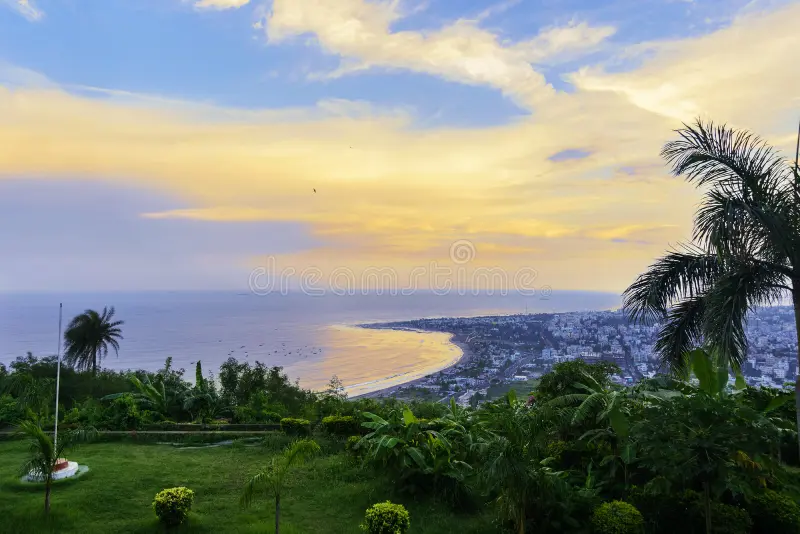
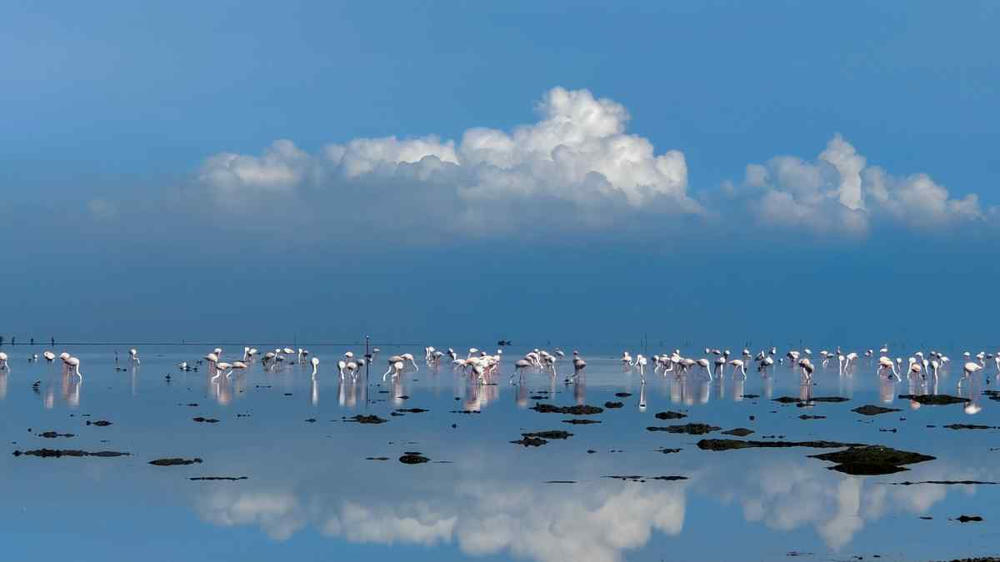

Tirupathi

Famous pilgrimage center, home to the Sri Venkateswara Temple.
- ⏰ Best Time: September – February
- 💰 Budget: ₹5,000 – ₹8,000 (2 days)
- 👨💼 Guide: Available near temple
- 🌤️ Weather: Pleasant, 15°C – 25°C in winter
- 📍 Location: Andhra Pradesh, India
Visakhapatnam (Vizag)
Coastal city with beaches, Kailasagiri hills, Araku Valley nearby, and Submarine Museum.
- ⏰ Best Time: October – February
- 💰 Budget: ₹5,000 – ₹9,000 (3 days)
- 👨💼 Guide: City tour guides available
- 🌤️ Weather: Tropical, 20°C – 32°C
- 📍 Location: Andhra Pradesh, India
Srisailam

Famous pilgrimage destination with the Mallikarjuna Jyotirlinga temple, surrounded by Nallamala forests.
- ⏰ Best Time: September – February
- 💰 Budget: ₹4,000 – ₹7,000 (2 days)
- 👨💼 Guide: Available near temple
- 🌤️ Weather: Pleasant, 15°C – 28°C
- 📍 Location: Kurnool district, Andhra Pradesh
Nellore
Historic temples, aquaculture, seafood cuisine, Penna River, and Sri Ranganathaswamy Temple.
- ⏰ Best Time: October – March
- 💰 Budget: ₹3,500 – ₹6,000 (2 days)
- 👨💼 Guide: Not mandatory, locals helpful
- 🌤️ Weather: Warm & humid, 20°C – 32°C
- 📍 Location: Andhra Pradesh, India
Vijayawada & Amaravathi

Vijayawada: Kanaka Durga Temple, Prakasam Barrage. Amaravathi: Ancient Buddhist Stupa and cultural heritage.
- ⏰ Best Time: November – February
- 💰 Budget: ₹5,000 – ₹9,000 (3 days)
- 👨💼 Guide: Available near Kanaka Durga Temple
- 🌤️ Weather: Moderate, 18°C – 32°C
- 📍 Location: Krishna District, Andhra Pradesh